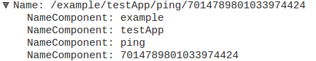

2017/08/17 - NDN Packet Format¶
Type-Length-Value (TLV) Encoding 1¶
Each NDN packet is encoded in a Type-Length-Value (TLV) format. NDN Interest and Data packets are distinguished by the type number in the first and outmost TLV0.
An NDN packet is mainly a collection of TLVs inside TLV0. Some TLVs may contain sub-TLVs, and each sub-TLV may also be further nested.
Variable Size Encoding for type (T) and length (L)¶
To minimize the overhead during early deployment and to allow flexibility of future protocol extensions to meet unforeseeable needs, both type (T) and length (L) take a variable size format. For implementation simplicity, both type and length take the same encoding format.
TLV Encoding¶
TLV encoding for NDN packets is defined as follows:
NDN-TLV := TLV-TYPE TLV-LENGTH TLV-VALUE?
TLV-TYPE := VAR-NUMBER
TLV-LENGTH := VAR-NUMBER
TLV-VALUE := BYTE+
TLV-TYPE SHOULD be unique at all nested levels. The TLV Type number space and initial assignments listed in Section TLV-TYPE number assignment of this document.

Name 2¶
An NDN Name is a hierarchical name for NDN content, which contains a sequence of name components.
NDN Name Format¶
We use a 2-level nested TLV to represent a name. The Type in the outer TLV indicates this is a Name. Inner TLVs should be one of NameComponent blocks, as defined in the following:
Name ::= NAME-TYPE TLV-LENGTH NameComponent*
NameComponent ::= GenericNameComponent |
ImplicitSha256DigestComponent
GenericNameComponent ::= NAME-COMPONENT-TYPE TLV-LENGTH BYTE*
ImplicitSha256DigestComponent ::= IMPLICIT-SHA256-DIGEST-COMPONENT-TYPE TLV-LENGTH(=32)
BYTE{32}
In Wireshark :
NDN URI Scheme¶
The scheme identifier is ndn.
The authority component (the part after the initial // in the familiar http and ftp URI schemes) is not relevant to NDN. It should not be present, and it is ignored if it is present.
Interest Packet¶
NDN Interest packet is TLV defined as follows:
Interest ::= INTEREST-TYPE TLV-LENGTH
Name
Selectors?
Nonce
InterestLifetime?
ForwardingHint?
Name and Nonce are the only two required elements in an Interest packet.
Selectors are optional elements that further qualify Data that may match the Interest. They are used for discovering and selecting the Data that matches best to what the application wants.
InterestLifetime and ForwardingHint are optional and are referred to as Guiders. They affect Interest forwarding behavior.
Name¶
The Name element in an Interest is synonymous with the term prefix. The Name element that can be put in the Interest is further restricted to have at least one NameComponent. Interests that include Name TLV that has zero name components MUST BE discarded.
Exclude 3¶
The Exclude selectors allow requesters to specify list and/or ranges of name components that MUST NOT appear as a continuation of the Name prefix in the responding Data packet to the Interest.
For example, if Interest is expressed for /ndn/edu and Exclude specifies one name component ucla, then neither data producer nor conforming NDN routers are allowed to return any Data packet that has prefix /ndn/edu/ucla.
Nonce¶
Nonce defined as follows:
Nonce ::= NONCE-TYPE TLV-LENGTH(=4) BYTE{4}
The Nonce carries a randomly-generated 4-octet long byte-string. The combination of Name and Nonce should uniquely identify an Interest packet. This is used to detect looping Interests.
Data Packet 4¶
The Data packet represents some arbitrary binary data (held in the Content element) together with its Name, some additional bits of information (MetaInfo), and a digital Signature of the other three elements. The Name is the first element since all NDN packet processing starts with the name. Signature is put at the end of the packet to ease the implementation because signature computation covers all the elements before Signature.
Reference¶
- 1
Type-Length-Value (TLV) Encoding : http://named-data.net/doc/NDN-TLV/current/tlv.html
- 2
- 3
Interest Pakcet : http://named-data.net/doc/NDN-TLV/current/interest.html#
- 4
Exclude : http://named-data.net/doc/NDN-TLV/current/interest.html#exclude
- 5
Data Packet : http://named-data.net/doc/NDN-TLV/current/data.html